Getting Started with OpenVCAD
This is the official getting started guide for OpenVCAD version 3.x.x+ (Attribute Modeling).
With this release, we have introduced Attribute Modeling, a powerful new concept that allows users to implicitly express volumetric compositions using OpenVCAD’s tree structure. This framework enables you to define virtually any object property—such as material density, color, or stiffness—as a continuous gradient.
Under the hood, OpenVCAD represents your design as an implicit Node tree: leaf nodes define geometry or sampled data (e.g. primitives, meshes, or signed distance fields), while composition nodes (CSG, transforms, shells, maps, etc.) combine and manipulate those leaves. Attributes attach additional field functions to this same tree so that, at any point in space, the system can evaluate both the shape (inside/outside) and the attributes (e.g. modulus, color, or volume fractions) in a consistent way.
What You Will Learn
The lessons below provide a comprehensive overview for beginners, covering how to:
Create geometry using the updated core engine.
Apply functional gradients as attributes to your models.
Render designs and interact with the results.
Note: If you are transitioning from OpenVCAD 2.x.x, this guide will highlight the major architectural shifts introduced by Attribute Modeling. Attribute Modeling is not directly backwards compatible; however, all functionality is reproducible using the new Attribute Modeling framework.
Prerequisites & Setup
Before beginning, ensure you have the OpenVCAD library installed. For detailed installation and environment setup instructions, please refer to examples/project_example.
Once installed, you can quickly verify things are working from Python:
import pyvcad as pv
print("OpenVCAD version:", pv.version())
If this prints a version string without raising an exception you are ready to run the examples below.
Running the Examples
All scripts for this guide are located in examples/1_getting_started. To run a script and launch the OpenVCAD render preview, use:
python <SCRIPT_NAME>.py
Each example in this guide includes an animated WebP for quick reference. Running the scripts locally allows you to interact with these 3D previews in real time.
Internally, pyvcad_rendering.Render(...) creates a small GUI application and remembers per-script view settings (camera, selected attribute, clipping planes, etc.) across runs. If you tweak the view for one lesson and re-run the same script, it will reopen with the last-used settings for that file, which is handy when iterating on designs. If you open another design file this will reset the render settings.
Note: For examples featuring applied attributes, you must select the specific attribute via Object -> Selected Attribute in the renderer menu to view the full-color preview.
Lesson 1: Hello World
Let’s start by creating a simple geometric primitive. In OpenVCAD, models are built using Node trees, where the leaves are primary shapes like spheres, cones, or prisms.
The pv.Vec3 class you see below is a thin Python binding around a 3D vector type (glm::vec3). You can construct it from three floats (Vec3(x, y, z)). In these basic examples, we treat the numeric values as arbitrary units; in a real workflow you can decide whether they correspond to millimeters, centimeters, or any other length unit that matches your printer or simulation.
import pyvcad as pv
import pyvcad_rendering as viz
# A simple rectangular prism. Create a 20x20x20 cube centered at the origin
radius = 10.0
dimensions = pv.Vec3(radius*2, radius*2, radius*2)
center = pv.Vec3(0, 0, 0)
cube = pv.RectPrism(center, dimensions)
root = cube
viz.Render(root)
Render
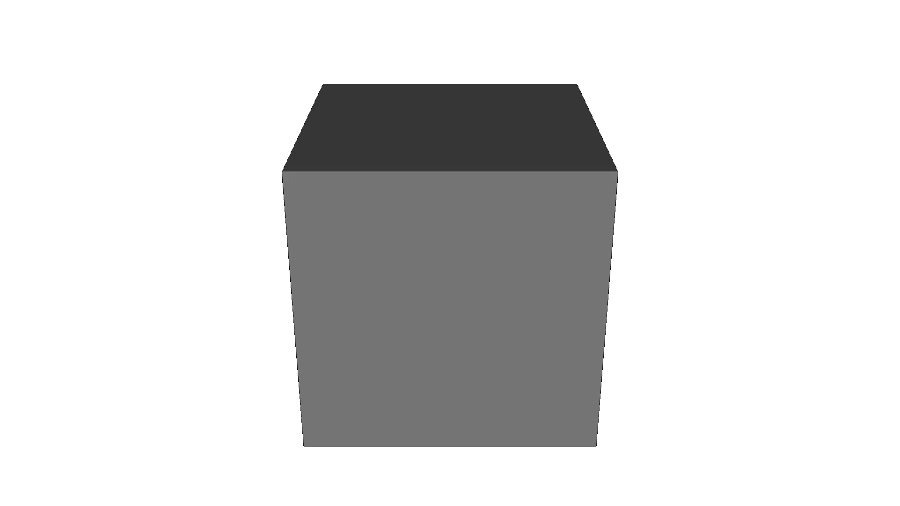
Lesson 2: Constructive Solid Geometry (CSG)
You can combine basic shapes using CSG boolean operations, such as Union, Intersection, and Difference. This lesson just shows how CSG works for just the geometry in OpenVCAD. You will learn more about how it applies to attributes later.
CSG nodes like pv.Union, pv.Intersection, and pv.Difference are composition nodes that take one or more child Node objects and create a new implicit object. Their behavior is defined at the signed-distance level: a Union takes the minimum of its children, an Intersection keeps only the overlapping region, and a Difference subtracts one object’s geometry from another. This means you can freely nest CSG operations and still get smooth, watertight geometry.
Union
The Union operation merges multiple shapes into one continuous volume.
left_sphere = pv.Sphere(pv.Vec3(-3, 0, 0), 5.0)
right_sphere = pv.Sphere(pv.Vec3(3, 0, 0), 5.0)
# Merge the two spheres together
root = pv.Union(left_sphere, right_sphere)
viz.Render(root)
Render
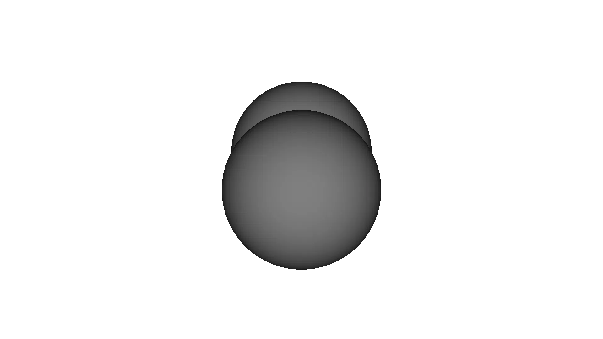
Intersection
The Intersection operation keeps only the overlapping regions of the supplied shapes.
left_sphere = pv.Sphere(pv.Vec3(-3, 0, 0), 5.0)
right_sphere = pv.Sphere(pv.Vec3(3, 0, 0), 5.0)
# Keep only the overlapping region
root = pv.Intersection(left_sphere, right_sphere)
viz.Render(root)
Render
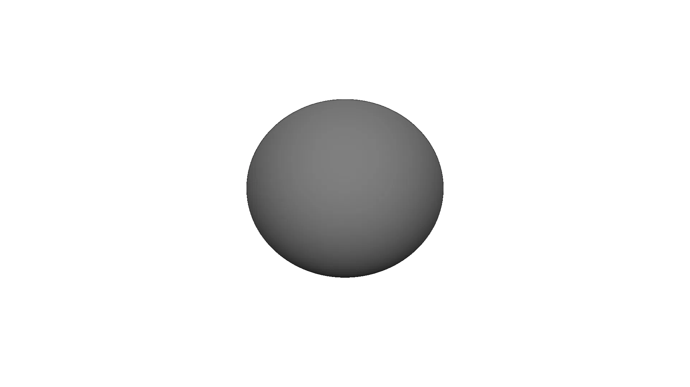
Difference
The Difference operation subtracts the right shape from the left shape.
left_sphere = pv.Sphere(pv.Vec3(-3, 0, 0), 5.0)
right_sphere = pv.Sphere(pv.Vec3(3, 0, 0), 5.0)
# Subtract right from left
root = pv.Difference(left_sphere, right_sphere)
viz.Render(root)
Render
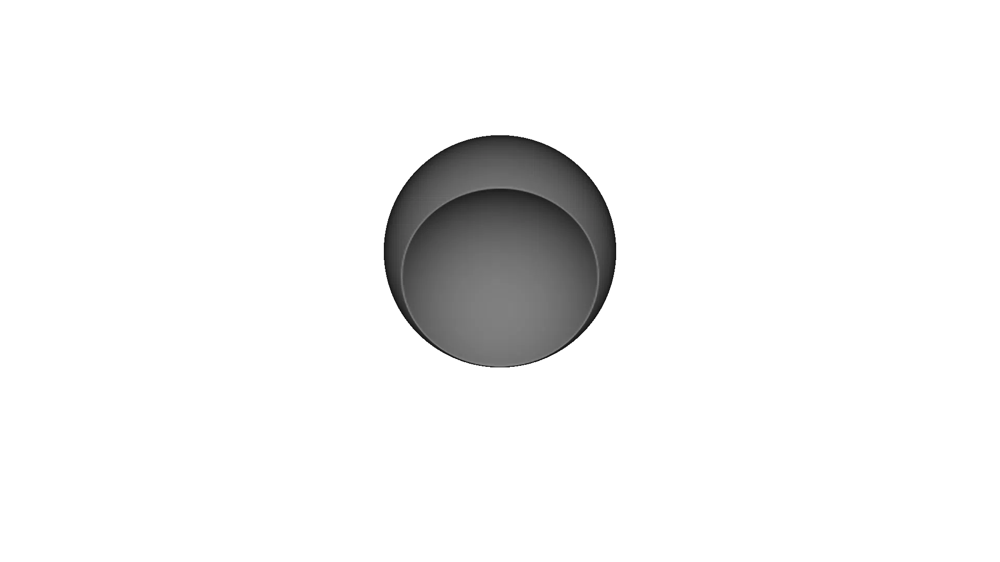
Bringing CSG Together
Note: this design is based on the object here
By combining these operations in a nested tree, we can build complex objects.
base_cylinder = pv.Cylinder(pv.Vec3(0,0,0), 2.0, 9.0)
root = pv.Difference(
pv.Intersection(
pv.RectPrism(pv.Vec3(0,0,0), pv.Vec3(8,8,8)),
pv.Sphere(pv.Vec3(0,0,0), 5.5)
),
pv.Union(
base_cylinder,
pv.Union(
pv.Rotate(90.0, 0.0, 0.0, base_cylinder),
pv.Rotate(0.0, 90.0, 0.0, base_cylinder)
)
)
)
viz.Render(root)
Render
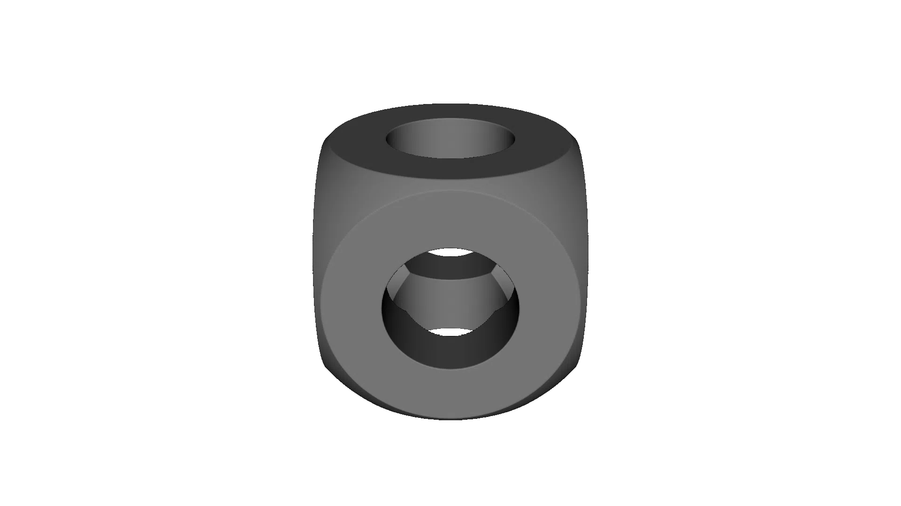
Lesson 3: Transformations
You can move, rotate, and scale nodes. In OpenVCAD, transformations act as container nodes wrapping their children, allowing transformations to apply globally to branches.
translation
Translations are represented by the pv.Translate node, which is a unary node that stores a 3D offset and applies the inverse offset when evaluating the child. Conceptually, it moves the entire subtree in Cartesian space without changing the signed-distance definition of its child.
cube = pv.RectPrism(pv.Vec3(0, 0, 0), pv.Vec3(10, 10, 10))
translated_cube = pv.Translate(15.0, 0.0, 0.0, cube)
root = pv.Union(cube, translated_cube)
viz.Render(root)
Render
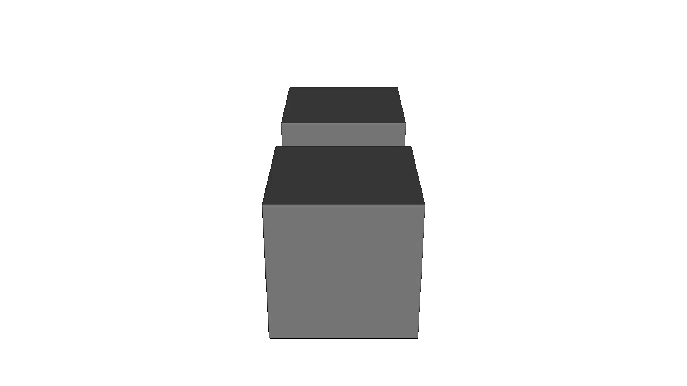
Rotation
Rotations use angles (in degrees) for Pitch, Yaw, and Roll.
The pv.Rotate node is also unary and internally stores Euler angles. The rotation is applied in the order roll → yaw → pitch. This is important if you start composing large rotations or using non-axis-aligned orientations, because changing the order of Euler rotations will change the final orientation of your geometry.
cube = pv.RectPrism(pv.Vec3(10, 0, 0), pv.Vec3(10, 10, 10))
rotated_cube = pv.Rotate(0.0, 45.0, 0.0, cube)
root = pv.Union(cube, rotated_cube)
viz.Render(root)
Render
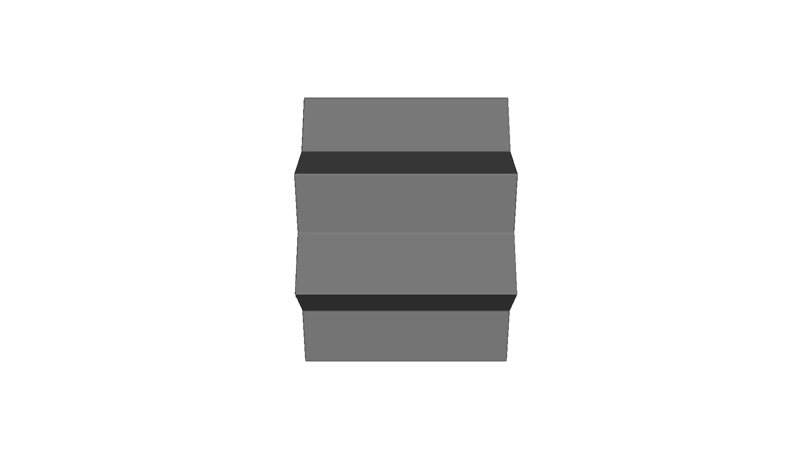
Scale
Scaling multiplies the object size across x, y, and z dimensions.
The pv.Scale node keeps track of a scale factor per axis. During evaluation, it scales incoming query points by the inverse factor so the child sees its original local coordinate space. This allows you to resize complex subtrees without having to manually adjust attribute expressions or child geometry definitions.
cube = pv.RectPrism(pv.Vec3(0, 0, 0), pv.Vec3(10, 10, 10))
scaled_cube = pv.Scale(2.0, 2.0, 2.0, cube)
moved_scaled = pv.Translate(20.0, 0.0, 0.0, scaled_cube)
root = pv.Union(cube, moved_scaled)
viz.Render(root)
Render
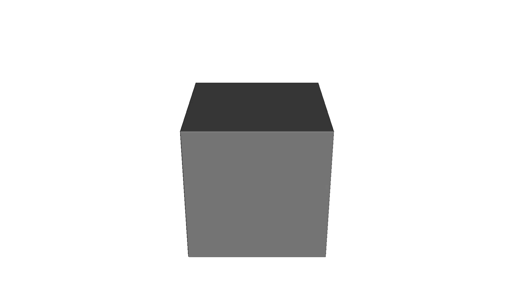
Lesson 4: Attributes
Attributes define continuous field properties over a volume (like modulus or temperature). Let’s define a simple constant value attribute:
pv.FloatAttribute is a flexible container for scalar fields. You can construct it in several ways:
Constant value:
FloatAttribute(5.0)(as shown below) stores a single number.Math expression string:
FloatAttribute("0.18 * z + 5.5")defines a function of $(x, y, z, d)$ evaluated at runtime.Python callable:
FloatAttribute(lambda x, y, z, d: ...)lets you write the field in native Python. Use with cautionSampled volume:
FloatAttribute(vdb_volume)samples from a VDB volume in the core library.
All of these ultimately provide the same interface to the rest of the system: a function that, given a spatial point (and signed distance), returns a float.
cube = pv.RectPrism(pv.Vec3(0, 0, 0), pv.Vec3(10, 10, 10))
# Define a static float attribute (e.g. modulus in MPa)
my_attr = pv.FloatAttribute(5.0)
cube.set_attribute(pv.DefaultAttributes.MODULUS, my_attr)
materials = pv.default_materials
root = cube
viz.Render(root, materials)
Render (modulus)
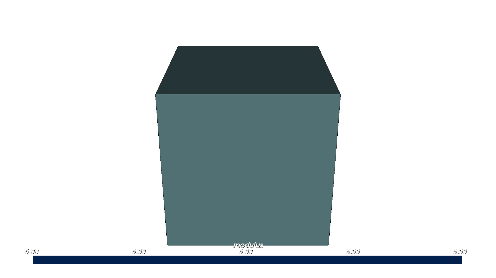
We can also define spatially varying attributes using math expressions. The variables x, y and z correspond to physical coordinates.
cube = pv.RectPrism(pv.Vec3(0, 0, 0), pv.Vec3(10, 10, 50))
# A gradient modulus that increases linearly along Z. Cube spans z from -25 to +25.
gradient = pv.FloatAttribute("0.18 * z + 5.5")
cube.set_attribute(pv.DefaultAttributes.MODULUS, gradient)
materials = pv.default_materials
root = cube
viz.Render(root, materials)
Render (modulus)
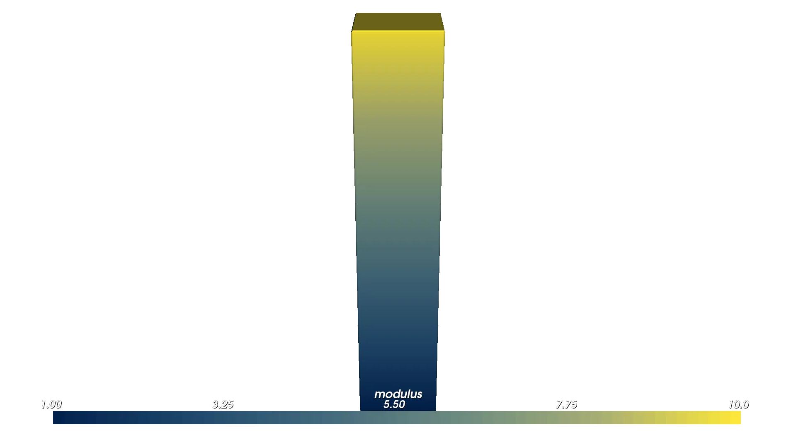
Lesson 5: Colors
OpenVCAD uses Vec4Attribute to assign continuous color gradients across an object using math expressions. Values represent R, G, B, and Alpha bounded from 0 to 1.
pv.Vec4Attribute is the vector-valued analog of FloatAttribute. Each component can be provided either as its own expression string, as a native Python function, or as a constant scalar. When used for color, keep each channel in [0, 1] so that renderers and downstream compilers can interpret the values consistently as linear RGBA.
cube = pv.RectPrism(pv.Vec3(0, 0, 0), pv.Vec3(50, 10, 10))
# Green (left) to magenta (right) along X
r_expr = "x/50 + 0.5"
g_expr = "-x/50 + 0.5"
b_expr = "x/50 + 0.5"
a_expr = "1.0"
color_gradient = pv.Vec4Attribute(r_expr, g_expr, b_expr, a_expr)
cube.set_attribute(pv.DefaultAttributes.COLOR_RGBA, color_gradient)
materials = pv.default_materials
root = cube
viz.Render(root, materials)
Render (color)
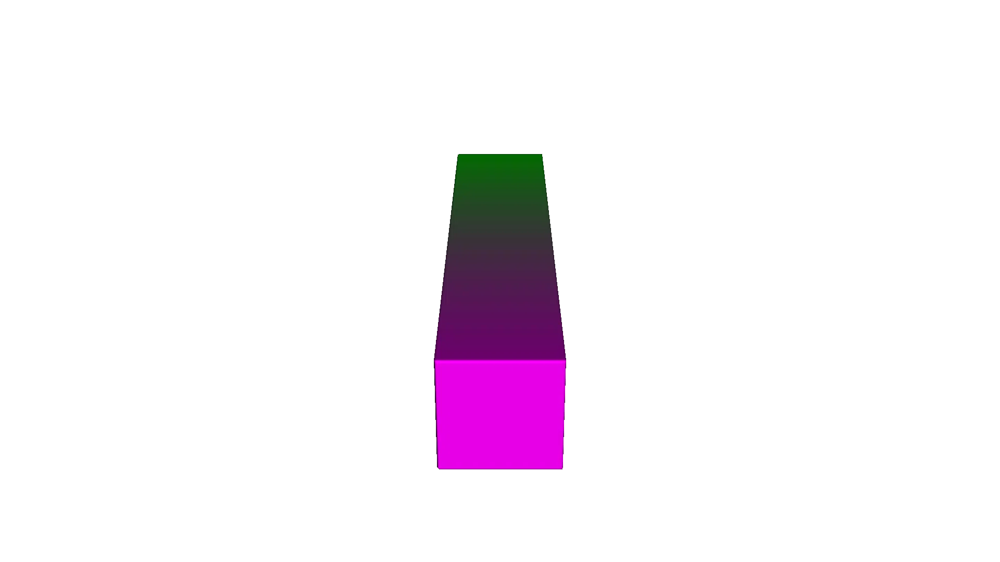
Lesson 6: Volume Fractions
Volume fractions define complex mixtures of multiple base materials simultaneously across an object—a critical feature for 3D multi-material printing. At any given point in space, the sum of all fractions must equal 1.0.
The pv.VolumeFractionsAttribute class takes a list of (expression_string, material_id) tuples. Material IDs come from your MaterialDefs object (e.g. materials.id("blue")). Each expression defines one scalar field per material; at any spatial point the attribute evaluates all of them and returns a mapping from material ID to fraction value.
import pyvcad as pv
import pyvcad_rendering as viz
materials = pv.default_materials
cube = pv.RectPrism(pv.Vec3(0, 0, 0), pv.Vec3(50, 10, 10))
# Volume fractions: list of (expression, material_id). Fractions must sum to 1.0.
fraction_gradient = pv.VolumeFractionsAttribute(
[
("x/50 + 0.5", materials.id("blue")),
("-x/50 + 0.5", materials.id("red"))
]
)
cube.set_attribute(pv.DefaultAttributes.VOLUME_FRACTIONS, fraction_gradient)
root = cube
viz.Render(root, materials)
Render (volume fractions)
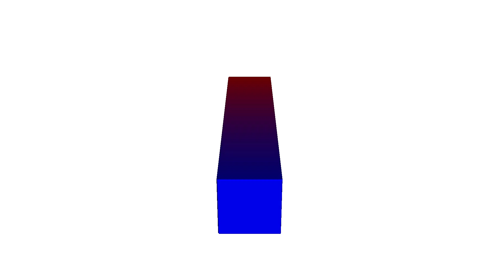
Here pv.default_materials returns a MaterialDefs object loaded from a JSON configuration bundled with the library. It knows, for each material, a stable ID, a name, and a representative RGBA color. When visualizing volume fractions in the renderer, those palette colors help you see how the mixture changes through the part. You can also construct your own MaterialDefs from a custom config file if you need printer-specific material sets. You can find the default config files in configs/
Lesson 7: The Node Hierarchy and Attribute Priority
Attributes are assigned to structural nodes in your CSG tree. Node rules determine priority:
Inheritance: A child without an attribute inherits it from its parent.
Override: If a parent has an attribute assigned, it explicitly overrides the attributes of its children.
CSG Handling: When two shapes are Unioned/Intersected without a parent override, they retain their distinct internal attributes.
These rules mirror how the underlying attribute system walks the Node tree: attributes are collected from the root down to the current leaf, and conflicts are resolved based on where in the tree a given attribute is attached. For binary CSG nodes like Union, if both children define the same attribute and no parent override is present, the first child’s attribute wins in the overlapping region, which is why the left cube “owns” the mixed zone in the example below.
left_cube = pv.RectPrism(pv.Vec3(-2.5, 0, 0), pv.Vec3(10, 10, 10))
red_attr = pv.Vec4Attribute("1.0", "0.0", "0.0", "1.0")
left_cube.set_attribute(
pv.DefaultAttributes.COLOR_RGBA, red_attr)
right_cube = pv.RectPrism(pv.Vec3(2.5, 0, 0), pv.Vec3(10, 10, 10))
blue_attr = pv.Vec4Attribute("0.0", "0.0", "1.0", "1.0")
right_cube.set_attribute(
pv.DefaultAttributes.COLOR_RGBA, blue_attr)
root = pv.Union(left_cube, right_cube)
viz.Render(root, pv.default_materials)
Leaf level handling
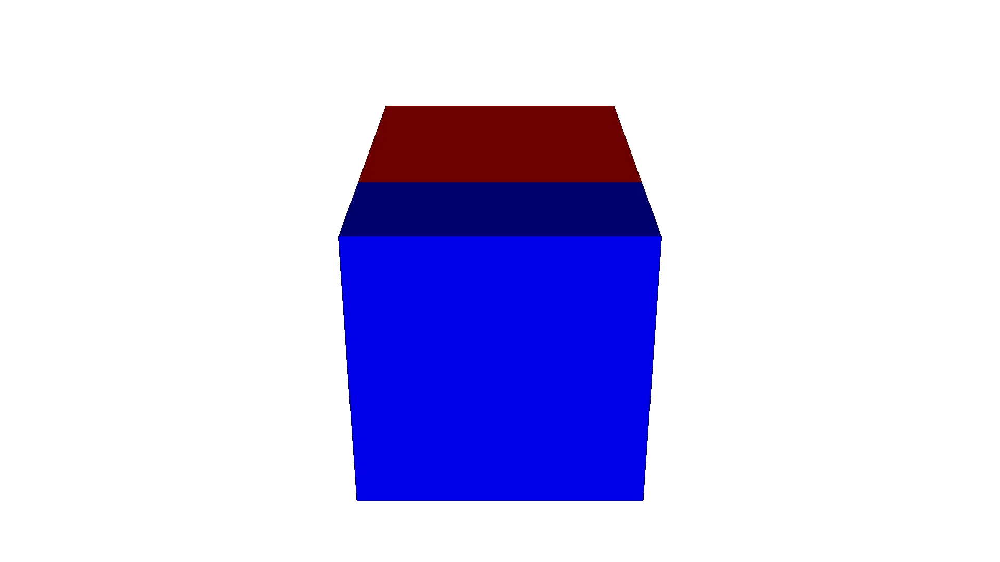
Parent level override
If we attached an attribute to the root Union node, it would apply across both boxes natively, dropping the individual red and blue assignments.
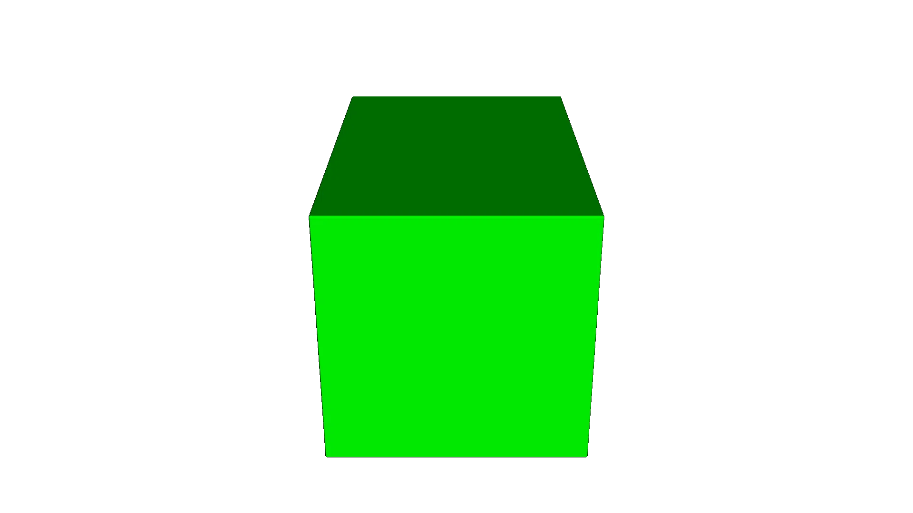
Lesson 8: Coordinate Spaces
All attributes operate in the local space of the node they are assigned to. That means if you move/rotate a node containing an attribute, the attribute will translate/rotate with the geometry!
Formally, transform nodes like Translate, Rotate, and Scale are unary nodes that apply a change of variables to both geometry and attributes: when the system evaluates a point in world space, it is first mapped back into the child’s local coordinates before sampling the signed-distance field and any attached attributes.
# A rectangular prism, long along X
prism = pv.RectPrism(pv.Vec3(0, 0, 0), pv.Vec3(20, 4, 4))
# Attach a color gradient that fits the un-rotated X extent [-10, +10]
color_gradient = pv.Vec4Attribute(
"clamp((x + 10.0) / 20.0, 0.0, 1.0)", "0.0",
"1.0 - clamp((x + 10.0) / 20.0, 0.0, 1.0)", "1.0"
)
prism.set_attribute(pv.DefaultAttributes.COLOR_RGBA, color_gradient)
# Rotate the prism 90 degrees about Z — the gradient rotates WITH the object
root = pv.Rotate(0.0, 0.0, 90.0, prism)
viz.Render(root, pv.default_materials)
Render (gradient rotates with geometry)
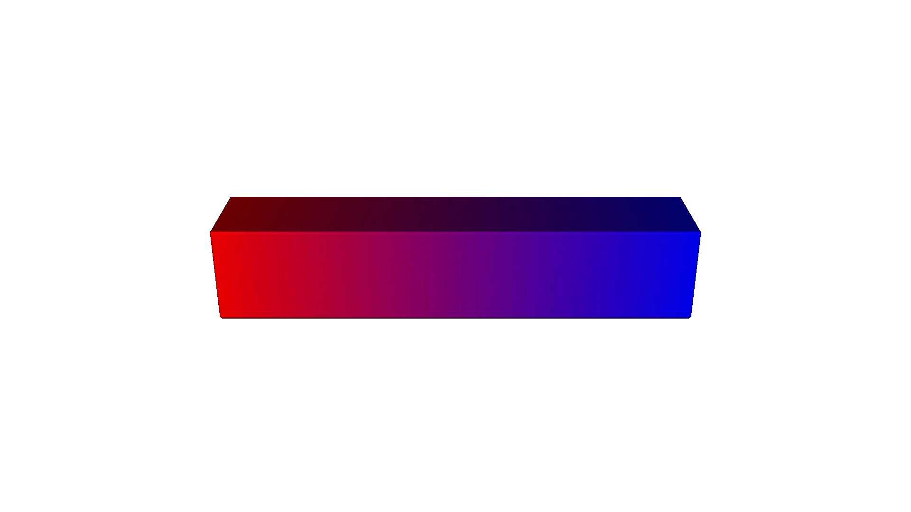
To apply a global static gradient regardless of rotation, apply the attribute AFTER the rotation using an Identity node:
# Start with an attribute-less rectangular prism
prism = pv.RectPrism(pv.Vec3(0, 0, 0), pv.Vec3(20, 4, 4))
rotated_prism = pv.Rotate(0.0, 0.0, 90.0, prism)
# The Identity Node passes geometry unharmed but provides a new coordinate layer!
root = pv.Identity(rotated_prism)
color_gradient = pv.Vec4Attribute(
"clamp((x + 10.0) / 20.0, 0.0, 1.0)", "0.0",
"1.0 - clamp((x + 10.0) / 20.0, 0.0, 1.0)", "1.0"
)
root.set_attribute(pv.DefaultAttributes.COLOR_RGBA, color_gradient)
viz.Render(root, pv.default_materials)
Render (world-aligned gradient via Identity)
Lesson 9: Bringing It All Together
A single object can carry multiple attributes simultaneously. In the render window, use the dropdown in the top-right corner to select which attribute to visualize.
Internally, those entries correspond to names defined in pv.DefaultAttributes (e.g. MODULUS, COLOR_RGBA, VOLUME_FRACTIONS). At any given sample point, the engine evaluates all attached attributes in one pass and then the renderer simply chooses which field to map to colors.
import pyvcad as pv
import pyvcad_rendering as viz
materials = pv.default_materials
cube = pv.RectPrism(pv.Vec3(0, 0, 0), pv.Vec3(20, 20, 20))
modulus = pv.FloatAttribute("z + 10")
cube.set_attribute(pv.DefaultAttributes.MODULUS, modulus)
color = pv.Vec4Attribute(
"x/20 + 0.5",
"1.0 - (x/20 + 0.5)",
"x/20 + 0.5",
"1.0"
)
cube.set_attribute(pv.DefaultAttributes.COLOR_RGBA, color)
fractions = pv.VolumeFractionsAttribute(
[
("-y/20 + 0.5", materials.id("gray")),
("y/20 + 0.5", materials.id("green"))
]
)
cube.set_attribute(pv.DefaultAttributes.VOLUME_FRACTIONS, fractions)
root = cube
viz.Render(root, materials)
Modulus (float)
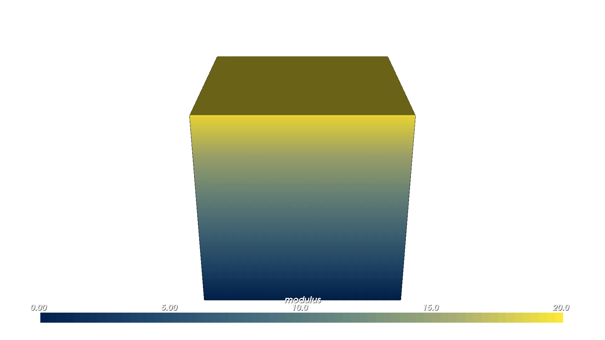
Color (Vec4)
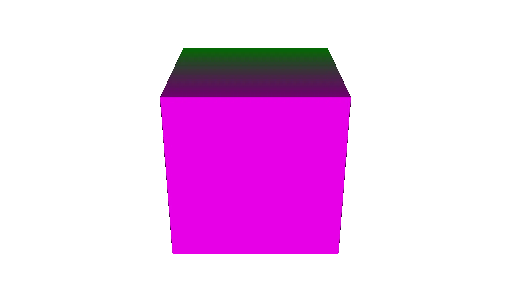
Volume fractions
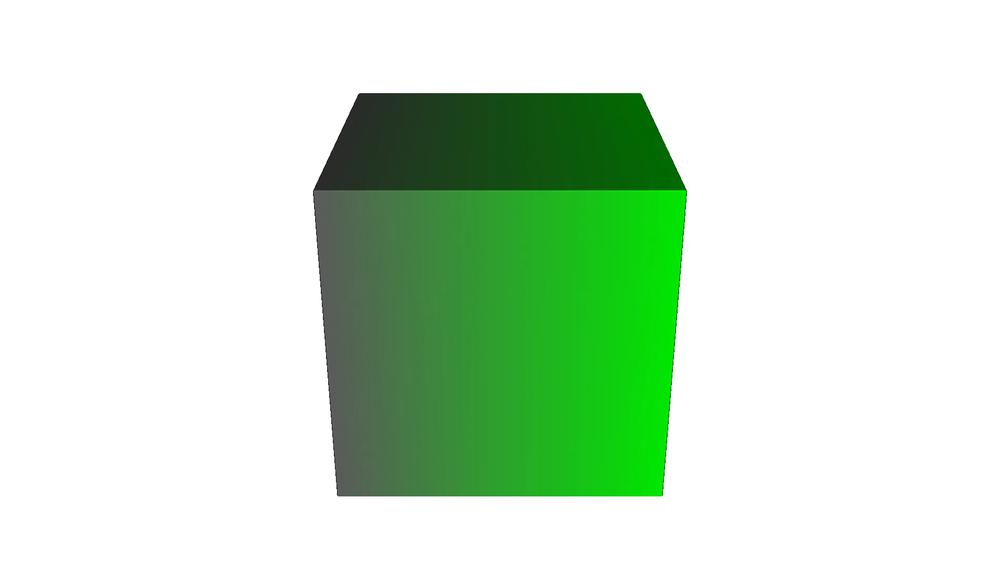
Appendix: Attribute Expressions, Coordinate Systems, and Default Names
Expression Variables and Coordinate Systems
Expression strings used by FloatAttribute, Vec4Attribute, and VolumeFractionsAttribute are parsed and compiled at runtime. They support a standard set of arithmetic operations and common math functions (e.g. sin, cos, sqrt, etc.), and they always receive the local coordinates for the node they are attached to.
For spatial grading you can use:
Cartesian coordinates:
x,y,zCylindrical coordinates:
rho,phicSpherical coordinates:
r,theta,phisSigned distance:
d(distance to the implicit surface; useful for boundary layers, fuzzy skins, etc.)
These variables are documented in the core headers (for example in core-lib/include/libvcad/attributes/float_attribute.h and core-lib/include/libvcad/attributes/attribute_modeling_architecture.md) and are wired through consistently across all expression-based attribute types.
Attribute Return Types vs. Named Types
Every attribute in OpenVCAD has:
A return type: what kind of value it yields at a sample point (e.g. scalar float,
vec3,vec4, or a volume-fraction set).A named type: a string key that describes what the value represents (e.g.
"modulus","temperature","color_rgba","volume_fractions").
From the renderer’s perspective, you can attach attributes with any user-defined names and then select among them in the attribute dropdown; as long as the return type is something the renderer knows how to visualize, it will happily display it.
However, the compiler layer (which translates OpenVCAD designs into printable or simulation-ready formats) expects certain standardized attribute names so it can map fields into the correct channels. This is what pv.DefaultAttributes provides: a curated set of canonical names plus their expected return types. The Python bindings for these live in:
core-lib/bindings/pyvcad/attributes/default_attributes.h(Python exposure)
and the authoritative core definitions (including the list of built-ins and their Attribute::ReturnType enums) live in:
core-lib/include/libvcad/attributes/default_attributes.h(C++ core)
When authoring new designs intended for downstream compilers, prefer the names in pv.DefaultAttributes (e.g. DefaultAttributes.MODULUS, DefaultAttributes.TEMPERATURE, DefaultAttributes.COLOR_RGBA, DefaultAttributes.VOLUME_FRACTIONS, etc.) so that your attribute fields line up with the expectations of printers, slicers, and analysis pipelines that consume OpenVCAD output.